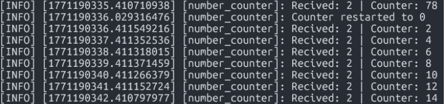

Ros2 Service Server
1) Activity Goals
-
Add a functionality to reset the counter to zero.
-
Create a Service Server: Create a service server inside the existing number_counter node.
-
Name the service /reset_counter.
-
Service Type: Use the pablo_interfaces/srv/SetBool type.
-
When the server is called, check the boolean data from the request; if it is true, set the counter variable to 0.
-
Call the service directly from the command line.
-
Create a custom node to call the /reset_counter service for extra practice.
2) Materials
No materials required
3) Code
This code of LAb 01
We star with the configuration of the interface with the next codes.
Imports
For this step we have the next imports:
import rclpy
from rclpy.node import Node
from pablo_interfaces.msg import Int64
from pablo_interfaces.srv import SetBool
Package
In this part we have to add the package in our package. xml:
<?xml version="1.0"?>
<?xml-model href="http://download.ros.org/schema/package_format3.xsd" schematypens="http://www.w3.org/2001/XMLSchema"?>
<package format="3">
<name>my_robot</name>
<version>0.0.0</version>
<description>TODO: Package description</description>
<maintainer email="pablo_pablo_@todo.todo">pablo_pablo_</maintainer>
<license>TODO: License declaration</license>
<depend>example_interfaces</depend>
<depend>rclp</depend>
<depedn>my_robot</depend>
<depend>pablo_interfaces</depend>
<test_depend>ament_copyright</test_depend>
<test_depend>ament_flake8</test_depend>
<test_depend>ament_pep257</test_depend>
<test_depend>python3-pytest</test_depend>
<export>
<build_type>ament_python</build_type>
</export>
</package>
Define trhe node
In this step we will create the node class and its named:
class pabloCounter(Node):
def __init__(self):
#Initialize node with the name "pablo_counter"
super().__init__("pablo_counter")
Callback
Now we create the callback of the function: The callback evaluates the boolean request.data: With the next code it will do: If True: It resets the counter to 0, logs the event, and returns a success response (True) with a confirmation message.
If False: It takes no action and returns a response indicating the reset was not performed (False).
# Service callback for /reset_counter
def read_bool_callback(self, request, response):
# Boolean condition if request.data is true, reset the counter to 0.
if request.data:
# reset counter
self.counter = 0;
#Indicates succesful reset
response.success = True
response.message = "Counter reset to 0"
# Log reset event
self.get_logger().info("Counter restarted to 0")
else:
# No reset performed
response.success = False
response.message = "Counter not reset"
return response
Code
#!/usr/bin/env python3
import rclpy
from rclpy.node import Node
from pablo_interfaces.msg import Int64
from pablo_interfaces.srv import SetBool
class numCounter(Node):
def __init__(self):
#Initialize node with the name "number_counter"
super().__init__("pablo_counter")
self.server_ = self.create_service(SetBool, "/reset_counter",self.read_bool_callback) # Creats a service server type SetBool. It needs: (Service type, service name, callback function)
self.counter = 0 # Start the counter on 0
self.subscriber = self.create_subscription(Int64,"/number", self.callback_receive_info,10) # (Type, topic name, callback function, queue size)
self.publisher = self.create_publisher(Int64,"/number_count",10) # (Type, topic name, queue size)
#Subscriber callback. Triggers every time a message is received on /number. Adds the received value to the internal counter and publishes the updated total.
def callback_receive_info(self, msg: Int64): #its receiving a msg of type String
# Acumulate recived value
self.counter += msg.data
# Create message to publish
out_msg = Int64()
out_msg.data = self.counter
#Log received value and current counter state
self.get_logger().info(f"Recived: {msg.data} | Counter: {self.counter}") #print the data field
#Published updated counter value
self.publisher.publish(out_msg)
# Service callback for /reset_counter. If request.data is true, reset the counter to 0.
def read_bool_callback(self, request, response):
# Boolean condition
if request.data:
# reset counter
self.counter = 0;
#Indicates succesful reset
response.success = True
response.message = "Counter reset to 0"
# Log reset event
self.get_logger().info("Counter restarted to 0")
else:
# No reset performed
response.success = False
response.message = "Counter not reset"
return response
def main(args=None):
rclpy.init(args=args) # Initialize rclpy
counter_node = numCounter() # Create node instance
rclpy.spin(counter_node) # Keep the node alive and processing callbacks
rclpy.shutdown() # Shutdown rclpy
if __name__ == "__main__":
main()
Add to setup.py
from setuptools import find_packages, setup
package_name = 'my_robot'
setup(
name=package_name,
version='0.0.0',
packages=find_packages(exclude=['test']),
data_files=[
('share/ament_index/resource_index/packages',
['resource/' + package_name]),
('share/' + package_name, ['package.xml']),
],
install_requires=['setuptools'],
zip_safe=True,
maintainer='pablo_pablo_',
maintainer_email='pablo_pablo_@todo.todo',
description='TODO: Package description',
license='TODO: License declaration',
extras_require={
'test': [
'pytest',
],
},
entry_points={
'console_scripts': [
'C3P0 = my_robot.my_first_node:main',
'number_publisher = my_robot.number_publisher:main',
'number_counter = my_robot.number_counter:main',
'c3p0 = my_robot.c3p0:main',
'publisher = my_robot.publisher:main',
'listener=my_robot.listener:main',
'todayclas = my_robot.todayclas:main',
'status_pub = my_robot.status_pub:main',
'num_publisher = my_robot.number_publisher:main',
'num_counter = my_robot.number_counter:main',
]
}
)
Run code
First we have the code of counter and publisher:
code for run in ubuntu terminal the publisher :
And the code for run counter

Then we try the reset with the function created before
